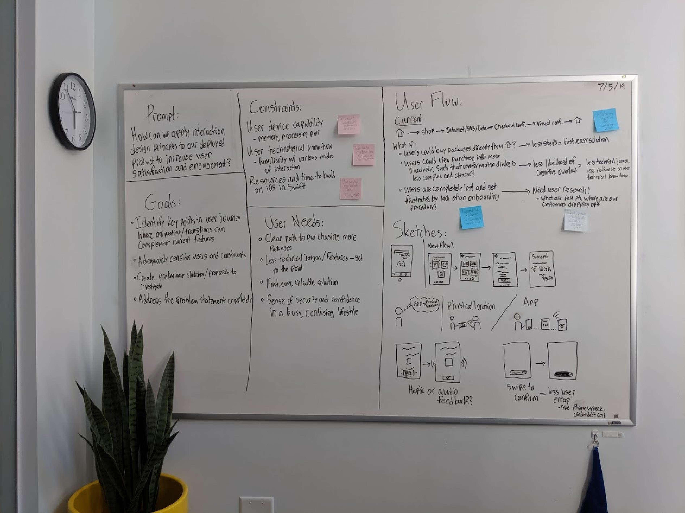

New Checkout Experience @Juvo
The content on this page is my own and does not necessarily reflect the views of Juvo Mobile Inc.
While I cannot show my design work and process here to remain in compliance with my NDA, you can still read an overview of my time at Juvo below. If you’re interested in learning more, please send me an email.
Overview
Role: Design Technologist Intern
Timeframe: May – August 2019 (10 weeks)
Tools: InVision Suite, Figma, XCode, AfterEffects
Key contributions
1. Created new user checkout interactions for the JuvoUP mobile app
2. Reimagined the Juvo Design System
3. Sparked interaction design (IxD) conversation at Juvo
Problem statement
"How might we apply interaction design principles to the JuvoUP product to make the app are more engaging for users and more successful for Juvo and our partners?"
Problem validation
This problem statement was validated by conducting exploratory user research and small-group mobile app testing over the first two to three weeks of the internship.
Hypothesis
The following hypothesis was formed on the basis of the problem statement, initial findings, and exploratory research:
"We believe that implementing simple micro-interactions such as animation and haptic feedback will achieve greater overall user satisfaction with the app because it satisfies usability guidelines and is both visually and functionally appealing."
Agenda
Audit of current Juvo mobile app offerings and usage of micro-interactions
Review WWDC 2018 Designing Fluid Interfaces
Present project proposal to Product team and Engineering manager for sign-off
Conduct three Research, Design, and Engineering (RDE) sprints following a divergent/convergent framework
Complete deliverables: prototypes in InVision Studio and Swift code
Present the future of IxD for Juvo mobile in an All Hands
Want a more in-depth explanation of this work, with added visuals? please send me an email.

Impact
New user checkout interactions
I explored interaction design principles and best practices. With these principles in mind, I created prototypes for the future of the Juvo mobile app interaction design.
I focused on enhancing the UX of making a purchase and seeing the purchase confirmation message, both critical points in the user journey in the Juvo app.
Reimagined the Juvo Design System
When I joined on at Juvo, the company was sold on adopting a design system, but the existing design system was not functioning seamlessly cross-functionally, particularly in the design-dev hand-off.
Along with members of Juvo Design in focus group sessions, I dissected the communication & technical barriers hindering full adoption within Juvo before offering suggestions based on my research of other well-known industry design systems.
Moreover, I authored documentation of animation, transitions, and micro-animations based on my own work in the Juvo Design System.
Sparked design conversation at Juvo
Crafting a beautiful product and user experience is impossible unless everyone who works on the product believes in the design process.
It was a welcome surprise that my project and time at Juvo would spark so much interest and conversation among all teams at Juvo HQ about interaction design and the general “feel” of the app.
Takeaways
I had a terrific time at Juvo in 2019. In three words, I'd say it was
Challenging
Identifying my personal interests and aligning them with the user and company interests was definitely a challenge. Within only a few hours of working, I realized my project for the summer was no longer a case study of an app I enjoyed to use, but rather, a living, breathing app that millions of users worldwide rely on for access to financial services.
As a piece of reflection after this experience, I would tell my future self: don't be afraid to ask questions and to not know the answers right away. Furthermore, being keenly aware of the scale of the problems I choose to tackle—and the impact that my proposed solutions may have—is imperative in designing with intentionality.
Rewarding
It was extremely exciting to be working at a smaller size startup in the SF Bay Area. I got a great feel for the culture of the company, as well as the crazy speed with which ideas can go from ideation to implementation.
Amazing
My manager and teammates were fantastic. They encouraged me to explore as far and wide as I wished and assisted me along the way. Developing friendships with coworkers and having shared bonding time with other interns (cohort of 4!) made the entire experience really memorable.